Nyzo version 529 (commit on GitHub) adds web monitoring to the sentinel.
This version affects the sentinel primarily. It also adds a small change to the page-refresh mechanism that affects the behavior of the verifier and client web monitoring.
In ManagedVerifier, some fields and constants have been added for storing information about recent queries.
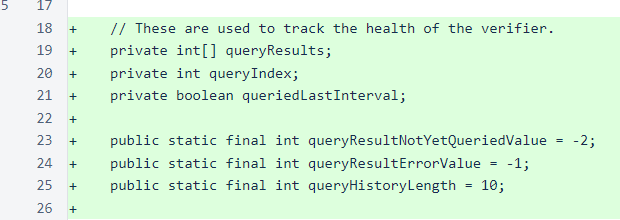The new query fields are initialized in the constructor.
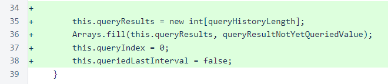Methods have been added for storing and retrieving query information.
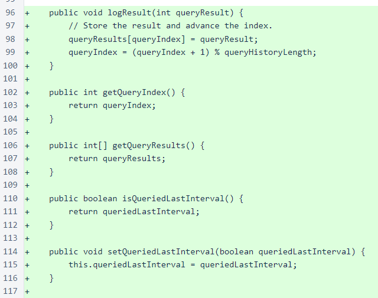In Sentinel, the verifiers map has been renamed to verifierMap, and verifiersList has been added to provide a view that preserves the original ordering in the managed_verifiers file.
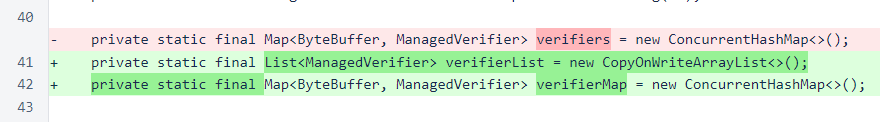If specified in the preferences file, the web listener is started for the sentinel at the beginning of the main method, just after setting the run mode. As with the client and verifier, you may need to open the appropriate port with your cloud provider to allow you to access the web interface for the sentinel.
Be sure that you understand the potential vulnerabilities associated with using this functionality before you activate it. This is still an unsecured, unauthenticated connection, and the information provided by this interface could be useful to an attacker trying to disable groups of verifiers.
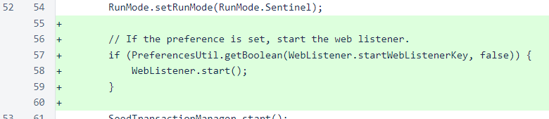Where appropriate, the new verifierList is used instead of a view of the values of the map. The query logic has been restructured slightly to allow marking whether a verifier sent a query in the last available time interval.
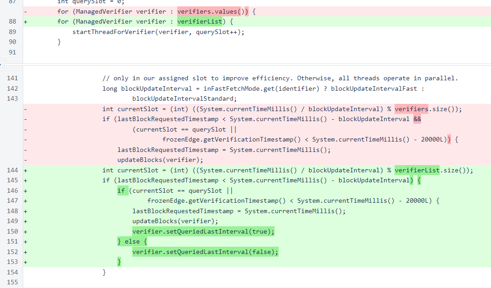The sentinel does not send or retrieve any messages that allow it to learn the nicknames of other verifiers. To improve usability of the monitoring interface, the comments in the managed_verifiers file are loaded into the nickname manager.
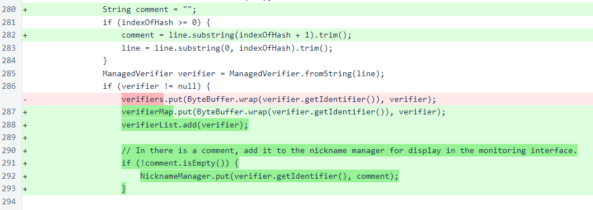When the response of a query is processed, the number of blocks retrieved is stored with the ManagedVerifier object for display in the monitoring interface. A negative-valued constant represents errors.
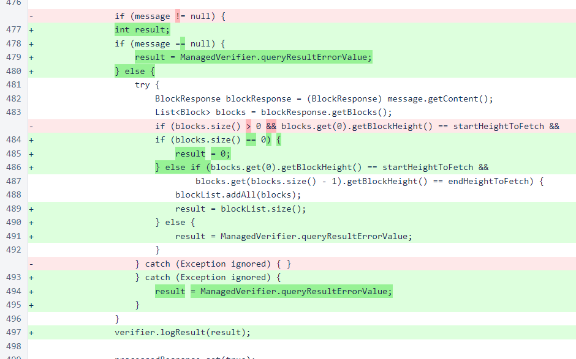Query efficiency is now exposed for displaying in the interface, as is the list of managed verifiers.
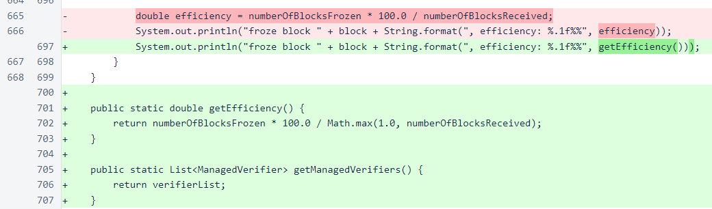In CycleController, some names have been simplified. These changes to not alter any behavior.
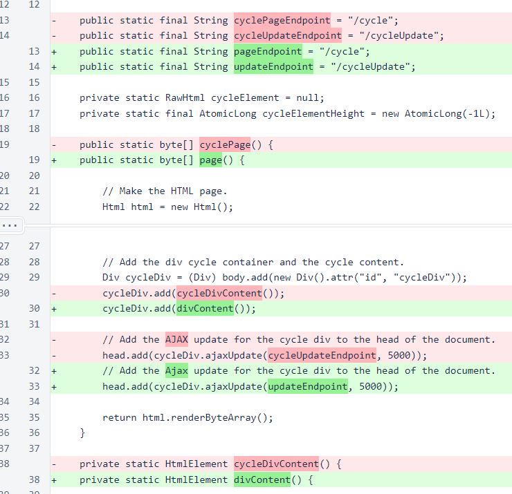SentinelController follows the same basic pattern as CycleController. It contains a div element that updates periodically.
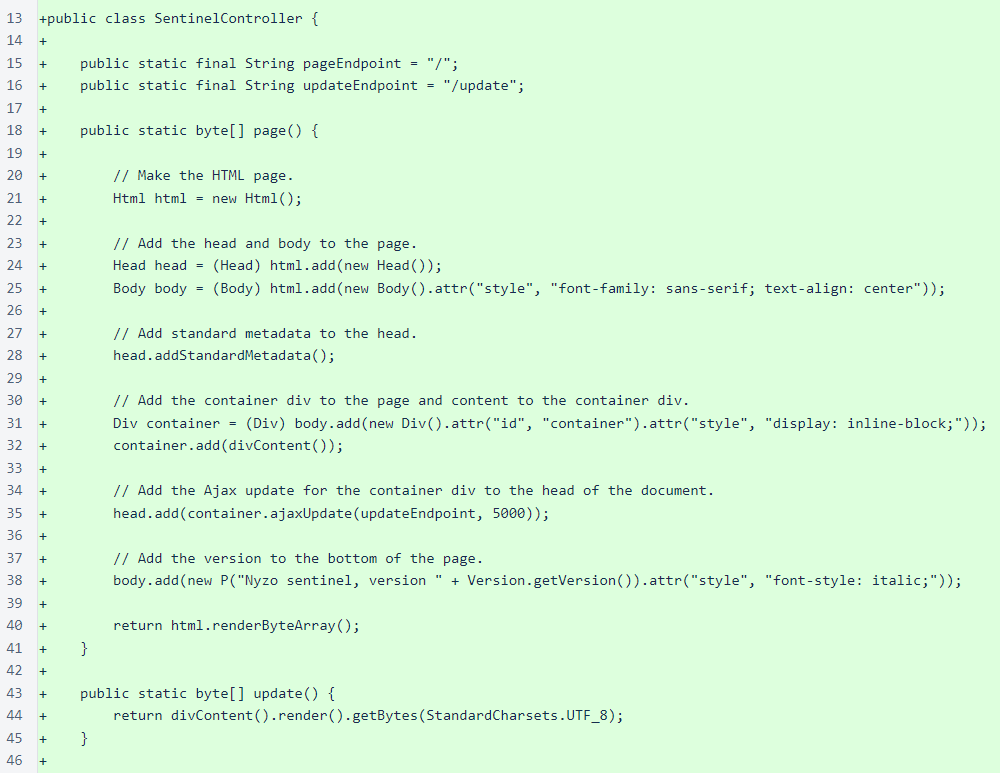The information table has one row for each managed verifier. The label with the verifier name darkens if the verifier sent a query in the last time interval, and tiles show the results of the last 10 queries. The dark horizontal lines across the tiles only convey information about position in the monitoring queue. They were added to show motion in the monitoring queue.
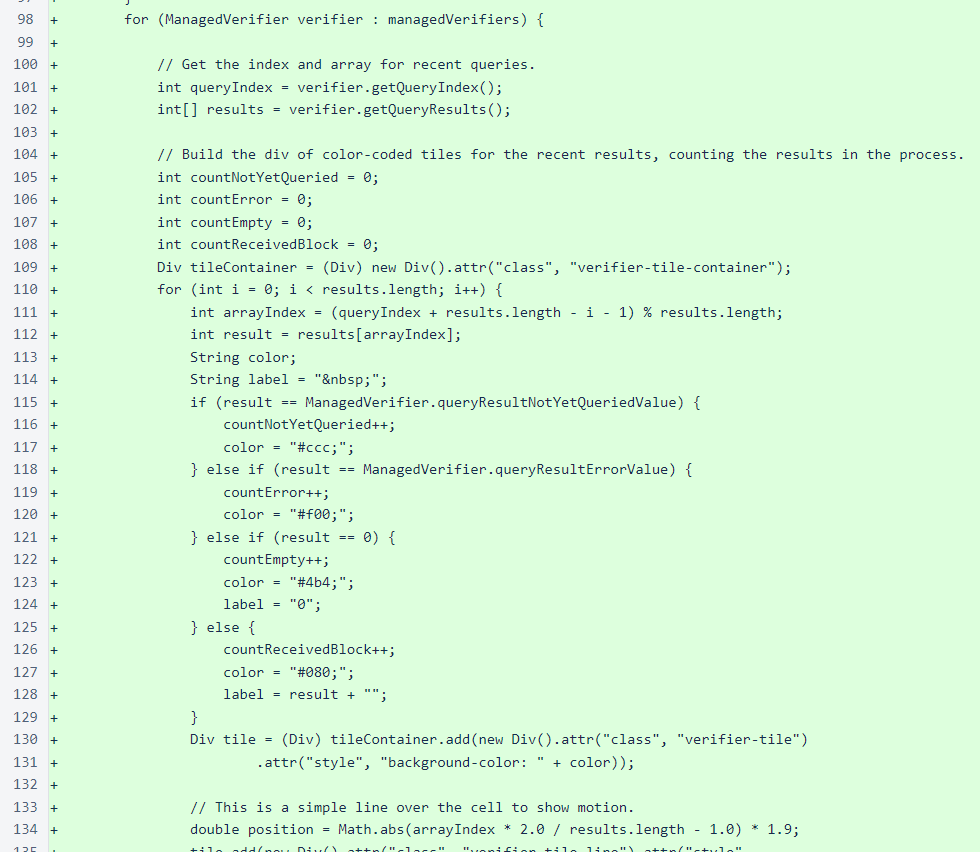This is an example of the monitoring interface running on a sentinel that is protecting the Nyzo verifiers.
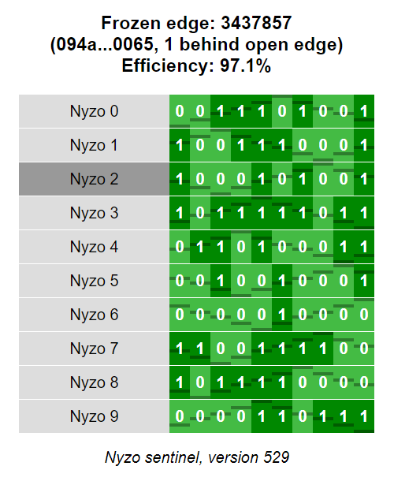While HTTP header fields are case-insensitive, all-lower-case header names are uncommon, so the Content-type header was updated. Also, the Date header was added.
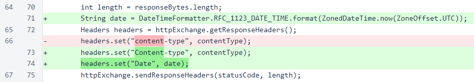The buildEndpointMap() method now considers the run mode to add the appropriate endpoints.
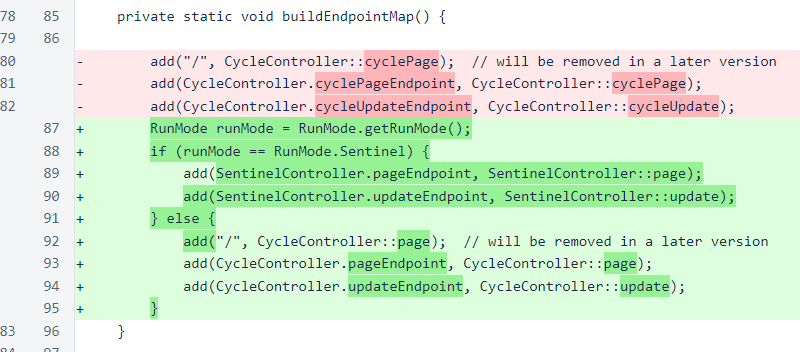The Head class has a new convenience method for adding metadata for viewport and to disable phone number detection.

The return types of attr() and addRaw() in HtmlTag have been narrowed to reduce the need for casts.
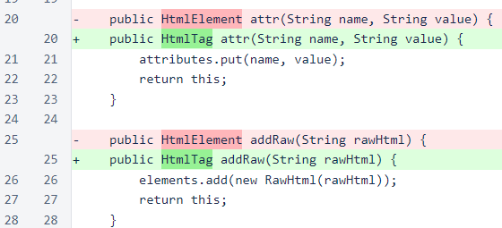The Ajax-update script now reduces the opacity of the target element if the content of that element is old. This applies to both the sentinel page and the cycle page.
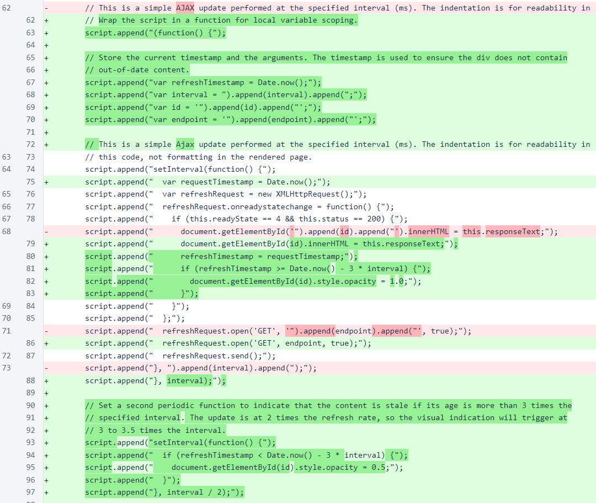